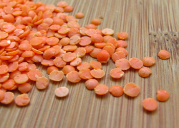
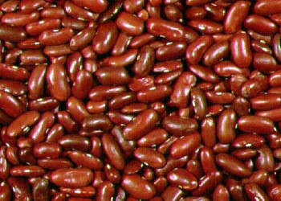
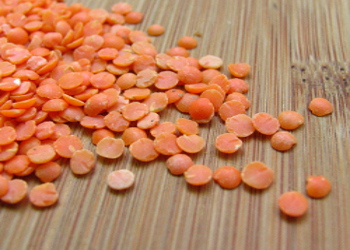
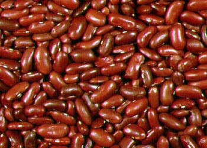

The bean truck is based on a simple philosophy: that healthy, tasty food can be affordable and fun! We draw on cuisines from around the world to make protein-rich, hearty soups, stews, sandwiches and more.
So, if you need a real meal, and you don't want to spend a lot of money, look for the Bean Truck on a street near you!